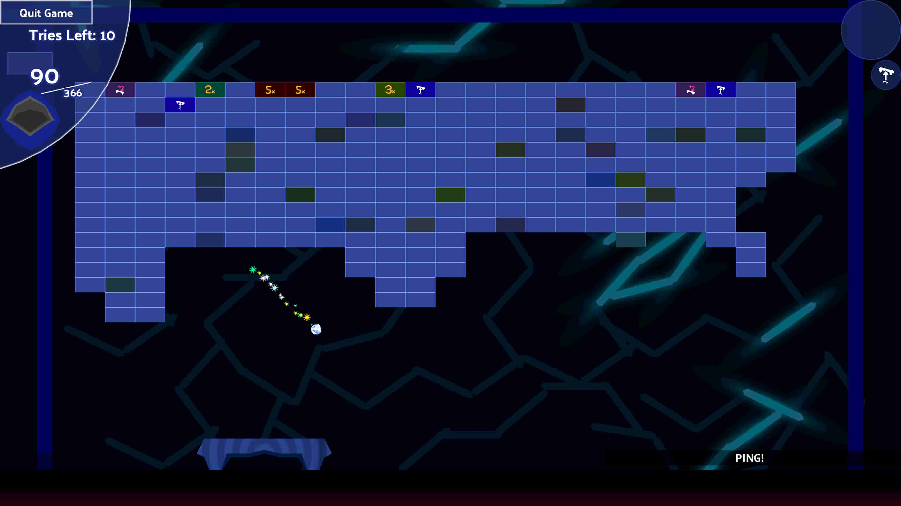

Dubious Deflective Spheres
A game about bad spheres and deflecting them back to where they came from!
Get as far as you can!
Game Objects and Extras (features in the game) ➡
Notable features include:
- Easy To Learn and Fully Customizable Controls (including keyboard + mouse and [semi]controller support)
- Several powerups that appear in blocks every so often
- Changes in later rounds including gameplay elements (major changes past rounds 20, 30, 50, 100+)
- Random eye candy backgrounds (with references to many things)
- Savable Second Slot Powerup for next game
- Bosses that show up every 10 rounds
- Collect Gold and Silver to get goodies

Play endless rounds of blocks versus spheres!
You can support the game by donating before you download the game. It is completely free to play in all cases.
Download and learn more here:
Itch Website